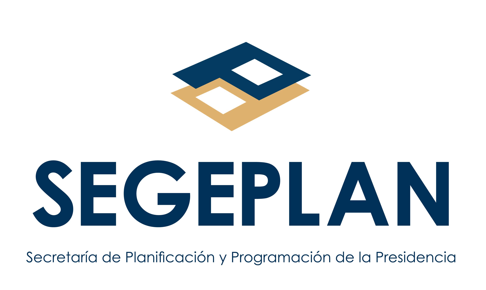

<div class="mat-app-background body app-layout">
  <mat-toolbar fxLayoutGap="15px">
    
    <p fxHide.lt-md  class="mat-subheading-2">Secretaría de Planificación y Programación de la Presidencia</p>
    <span fxFlex></span>
    <button mat-mini-fab *ngIf="theme === 'darkMode'" (click)="changeMode()" matTooltip="Modo claro">
      <mat-icon>light_mode</mat-icon>
    </button>
    <button mat-mini-fab *ngIf="theme === 'lightMode'" (click)="changeMode()" color="primary" matTooltip="Modo oscuro">
      <mat-icon>dark_mode</mat-icon>
    </button>
    <button mat-mini-fab color="accent" matTooltip="Mi cuenta">
      <mat-icon>account_circle</mat-icon>
    </button>
  </mat-toolbar>
  <router-outlet></router-outlet>
</div>
